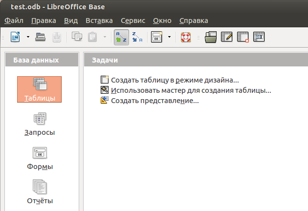
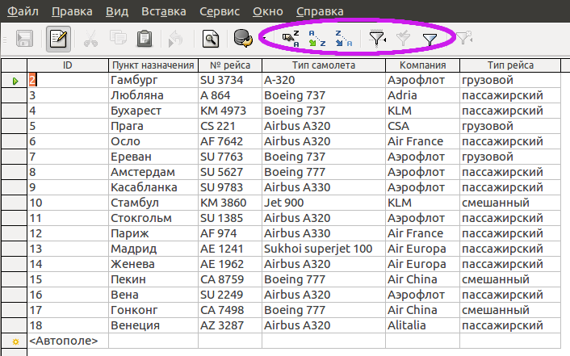
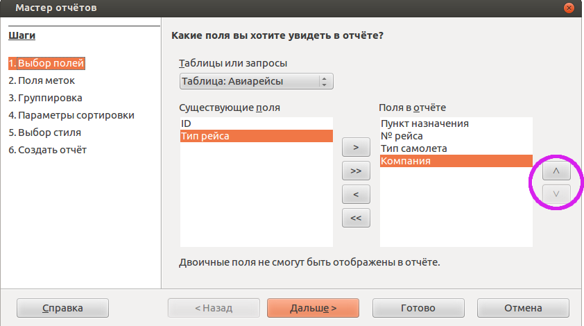
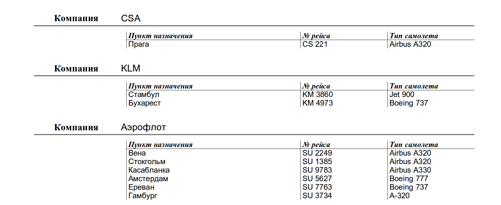
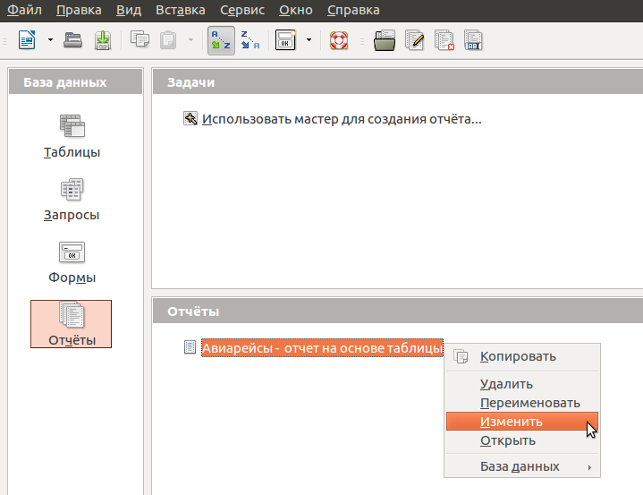
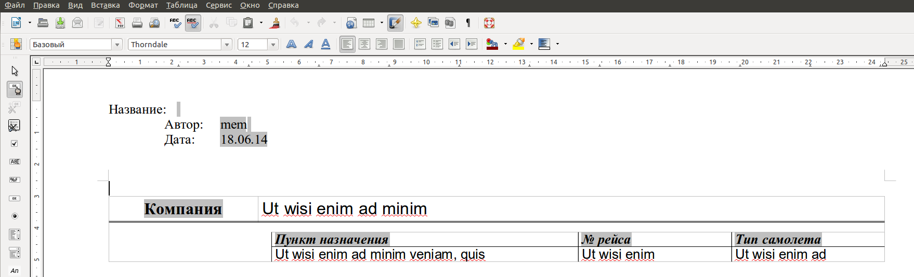
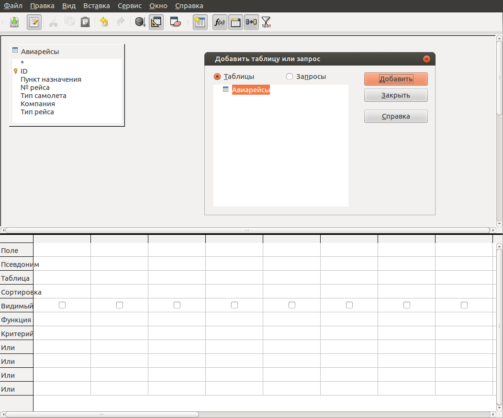

© IGP, март 2025 г.
Проще всего представить себе базу данных как таблицу, в ячейках которой содержатся данные. Базы такого типа называются реляционными.
Каждая строка таблицы соответствует одной записи в базе. Записей может быть сколько угодно, каждая из них отражает свойства конкретного реального объекта. Процесс пополнения базы данных заключается в добавлении новых записей и в редактировании существующих.
Колонки определяют атрибуты (свойства) записей, а значит и реальных объектов. Набор колонок должен быть продуман и определен до создания базы. После того как база создана, добавление новой колонки иногда может быть связано с некоторыми трудностями. Чаще это не так, но лучше все-таки определиться до, а не после.
База данных может состоять из нескольких таблиц и эти таблицы могут быть связаны между собой.
LibreOffice Base позволяет создавать как локальные, так и сетевые реляционные базы данных или подключаться к уже имеющимся базам. В любом случае Base позволяет добавлять и удалять записи, редактировать данные, делать выборки, формировать отчеты.
При щелчке левой кнопкой мыши на элементе Таблицы, в правой нижней части рабочего поля будут перечислены имеющиеся таблицы, сейчас там пусто. В правой верхней части рабочего поля появляется набор возможных действий. Удобнее всего создавать таблицы в режиме дизайна. Для этого надо выбрать верхний пункт, после чего откроется соответствующее окно.
Каждая строка окна Дизайнера таблиц описывает одну колонку создаваемой таблицы. Первая строка Дизайнера соответствует первой колонке таблицы, вторая строка - второй колонке и так далее.
На иллюстрации строки Дизайнера уже заполнены для создания конкретной таблицы.

При проектировании таблицы нужно обратить внимание на два основных момента. Перечень и порядок следования колонок определяют те данные об объекте, которые будут заноситься в базу и то, насколько удобно это будет делать. А свойства этих данных определяют размер файла базы. Это можно пояснить на примере показанной здесь таблицы Авиарейсы.
Каждая колонка таблицы имеет имя, которое задается в графе Название поля. Хорошей практикой, особенно для таблиц с большим количеством колонок, является заполнение графы Описание. В обоих случаях текст просто вводится в нужное поле с помощью клавиатуры. Ширину любой графы можно изменить с помощью мыши.
Изменить порядок следования колонок в таблице или добавить колонку между двумя имеющимися сложно, а часто невозможно.
Графа Тип поля заполняется путем выбора из вариантов, как это показано на иллюстрации для нижней строки (колонка Тип рейса). Для более точной настройки поля в нижней части расположена область Свойства поля. В нем можно указать, что оно является обязательным для заполнения, назначить количество символов в ячейке и определить некоторые другие характеристики.
Количество символов всегда желательно указывать исходя из свойств реальных данных для поля. Дело в том, что, например, для текстовых данных длина поля по умолчанию составляет 100 символов. Именно столько места будет зарезервировано для данных в этом случае. Но, если реальный текст, который будет заноситься в ячейку, состоит максимум из 12 символов, то остальное место будет оставаться пустым.
Первая строка Дизайнера, соответствующая первой колонке таблицы, является ключевым полем. Данные в ней будут появляться автоматически при добавлении каждой новой записи. Здесь это просто номер, который каждый раз увеличивается на единицу. Ключевое поле гарантирует, что в базе ни при каких обстоятельствах не будет содержаться двух одинаковых записей. Они обязательно будут отличаться друг от друга хотя бы ключом.
Полезность баз определяется прежде всего полнотой и актуальностью имеющихся в них данных. А также корректностью их занесения. Первое означает, что при любых изменениях реальных объектов, для которых построена база, эти изменения следует сразу же отражать в таблицах. Для базы Авиарейсы это добавление новых рейсов, изменение типа самолета, изменение пункта назначения и другие подобные.
Второе связано с недопустимостью ошибок ввода данных, что вполне возможно при их ручном вводе. Например, "Air Europa" и "AirEuropa" являются одним и тем же только с точки зрения человека. Для компьютера это разные данные. Такие ошибки могут (и будут) приводить к получению неправильных запросов или отчетов. Несколько обезопасить себя от совершения подобных ошибок можно использованием копирования и вставки уже введенных ранее данных.

С таблицами уже можно делать некоторые полезные вещи. Например, можно сортировать записи по данным в любом столбце (в восходящем или нисходящем порядке). Можно применить фильтр для показа только записей, содержащих определенное поле. Инструменты, предназначенные для таких манипуляций, обведены на иллюстрации овалом.
Обычно получение отчета становится первым действием (а иногда и единственным) после создания таблицы. Всегда приятно посмотреть на результат работы, тем более, что отчеты выглядят достаточно хорошо. К тому же построение отчета является очень простой процедурой и требует буквально всего несколько кликов мышкой.
Отчет - это просто красивая форма представления данных из таблицы. Обычно его создают для последующей печати. В отчет можно включать не все данные таблицы. Выбор производится по целым колонкам - их можно включить в отчет или исключить из него.
Если этого недостаточно, то сначала надо создать запрос, а уже на его основе - отчет. Поскольку запрос тоже является таблицей, то отчет и в этом случае создается так же как для таблицы.
Для создания отчетов имеется мастер, который становится доступен при выделении в левой части рабочего окна LibreOffice Base элемента Отчеты. На первом шаге мастера требуется указать таблицу (или запрос) для построения отчета. Здесь же нужно перенести те поля (колонки) таблицы, данные из которых попадут в отчет.
На иллюстрации данные из колонок ID и Тип рейса не будут фигурировать в отчете. Порядок следования колонок в отчете, в отличие от таблицы, можно легко изменить с помощью кнопок, которые обведены на иллюстрации кружком.

Второй шаг мастера позволяет изменить названия колонок. Это сделано потому, что очень часто колонки в таблицах именуются весьма условно. К примеру, это может быть что типа NR1, Type или что-нибудь похожее. В отчете, конечно же, лучше иметь более осмысленные названия полей.
На третьем шаге мастера определяются поля для группировки данных. В данном случае группировка будет делаться по названию компании.
На четвертом шаге мастера определяются параметры сортировки строк внутри групп.
Пятый шаг мастера позволяет выбрать стиль отчета. Здесь имеется большой выбор. Кроме того, на этом шаге можно задать ориентацию страницы - альбом или портрет.
На шестом, заключительном шаге надо задать заголовок отчета и выбрать его тип - динамический или статический. Различие состоит в том, что динамический отчет будет содержать те данные из таблицы-источника, которые имеются в ней при его открытии.
Другими словами, если данные в таблице изменились даже после создания отчета, в нем они тоже изменятся. Статический отчет, напротив, будет содержать те данные, которые были в таблице в момент его создания. Любая модификация таблицы после создания статического отчета никак не скажется на его содержании.

Некоторые возможности для изменения внешнего вида отчета предоставляет пункт меню Изменить, который вызывает Конструктор отчетов (Report Design). Этот инструмент позволяет изменять положение и размер полей с данными, изменять заголовки, управлять колонтитулами.


К сожалению, работа с Конструктором отчетов не является простым занятием и не очень прозрачна. Зато отчет остается частью базы данных.
Другая возможность для правки связана с тем, что готовый отчет представляет собой обычный документ LibreOffice Writer. Он может быть сохранен в отдельный файл odt (Файл -> Сохранить как) и после этого его можно редактировать, добавлять графику или экспортировать в формат PDF. Здесь нет никаких ограничений. Однако, такой отчет уже будет самостоятельным документом вне базы данных.
Возможность создавать запросы является важнейшим свойством баз данных. Она позволяет получать из одного набора данных множество различных результатов. Создание запросов и получение ответов - это практически единственный способ вести диалог с базой данных.
Результат запроса к базе представляет собой выборку данных из таблицы, сделанную по каким-либо правилам. Поэтому запрос всегда основан на конкретной таблице (или нескольких таблицах). В результате появляется новая таблица. Однако, она не является самостоятельной. При изменении данных в исходной таблице результат запроса также изменится. При удалении таблицы запрос, который на ней основан, также будет автоматически удален.
Для создания запросов в LibreOffice Base имеется три способа.
При выборе варианта Создать запрос в режиме дизайна появляется окно Query Design и предложение добавить таблицы и запросы. Как уже говорилось, запрос должен быть адресован хотя бы одной таблице. Но их количество может быть больше одной. А, поскольку результатом запроса тоже является таблица, то запрос может основываться и на сделанном ранее запросе. Сейчас в базе имеется только одна таблица и запрос будет строиться именно к ней.
